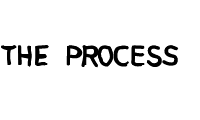

Type: Work produced at Leo Burnett Guatemala
Brief: Persuade small business owners to join the bank.
Idea: We created billboards for street vendors to show that even small investments can help them grow their business.
Team: Gerardo Cotuc, Martin Luzardo, Ernesto Cantoral, Alex Davila and many more.
Role: Copywriting.
This project taught me a lot about the copywriting craft and the process of making ideas happen. This project pushed my limits and helped me build a thick skin and a resilient attitude. Also, it was shorlisted at Cannes.

Two months after I started working for the first time as a copywriter,
I was presented with this project, and even without having any knowledge
about what's good and what's bad, I could tell this one was special.
Long story short, the idea was a hit. The client, my coworkers and agencies
from the Leo Burnett network, they all loved it and I was happy for it,
but little did I know that it was just the beginning.
At that time, my main responsability became writing the script for the case study. Looking back, I think of this period as a script-writing bootcamp; I wrote many drafts, harrased people for feedback and iterate upon their inputs.
Later in the process, they put me in contact with Jason Soy, senior copywriter at LB Toronto, and he pretty much told me my script sucked. Following his advice and after many drafts, I found an angle with a human story and a clear antagonist.
He liked it, my boss did as well and the network was willing to pay for its production. Here is the final result: